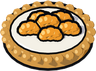
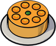
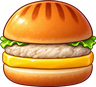
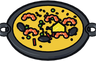
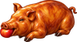
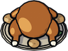

Grocer Hallgerd
Dialogue
“Fresh today. Mostly.”
“Nobody fights well on an empty stomach.”
Shop
| Item | Price |
|---|---|
| Cyclops Burger | 33 gold |
| Halibut Steak | 33 gold |
| Sausages | 33 gold |
| Blue Potion | 150 gold |
 Cloudberry Tart | 38 gold |
 Orange Cake | 38 gold |
| Starfin Platter | 42 gold |
 Yeti Burger | 42 gold |
| Green Potion | 350 gold |
 Paella | 47 gold |
| Purple Potion | 700 gold |
 Cooked Pig | 51 gold |
 Roast Goose | 51 gold |
| White Potion | 1000 gold |
Buys
| Item | Pays |
|---|---|
| Cyclops Burger | 6 gold |
| Halibut Steak | 6 gold |
| Sausages | 6 gold |
| Blue Potion | 7 gold |
| Cloudberry Tart | 7 gold |
| Orange Cake | 7 gold |
| Starfin Platter | 8 gold |
| Yeti Burger | 8 gold |
| Green Potion | 9 gold |
| Paella | 9 gold |
| Purple Potion | 9 gold |
| Cooked Pig | 10 gold |
| Roast Goose | 10 gold |
| White Potion | 15 gold |